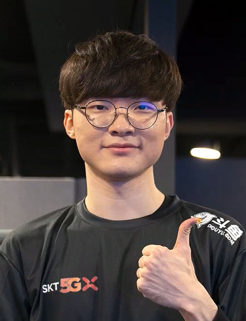

Lee Sang-hyeok (Faker)

Faker has secured a record of 10 League of Legends Champions Korea (LCK) titles, two Mid-Season Invitational (MSI) titles, and a record four World Championship titles
- Season 3 (2013):
- Faker burst onto the competitive scene as a rookie, quickly making a name for himself. Crowned as the champion of the Season 3 World Championship, leading SK Telecom T1 to victory.
-
Season 5 (2015):
- Once again claimed the Summoner's Cup at the Season 5 World Championship, solidifying his status as the undisputed best mid laner in the world. Earned the title of MVP for his outstanding performance throughout the tournament.
-
Season 6 (2016):
- Secured back-to-back victories at the Mid-Season Invitational and the World Championship, showcasing his unparalleled consistency and skill. Cemented his legacy as one of the greatest players in League of Legends history.
- Season 7 (2017):
- Led SK Telecom T1 to yet another triumph at the Mid-Season Invitational, further solidifying his dominance on the international stage. Continuously redefined the mid lane role with his innovative strategies and unparalleled mechanics.
-
Season 9 (2019):
- Captured his third World Championship title, proving that his prowess knows no bounds. Became the first player in history to win three Worlds titles, a testament to his unparalleled skill and dedication.
-
Season 10 (2020):
- Despite facing formidable opponents, Faker showcased his resilience and adaptability, leading T1 to multiple domestic titles. Remains a beacon of excellence and inspiration for aspiring League of Legends players worldwide.